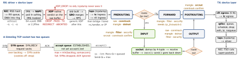

linux · folio
In one line: A frame is DMA’d into a ring, polled by NAPI in softirq, offered to XDP, merged by GRO, copied to taps, run through tc and the netfilter hooks; a routing decision sends it up to a socket (INPUT) or across (FORWARD). conntrack remembers every flow, so NAT is decided on the first packet and replies are reversed for free. DNAT before routing, SNAT after.
Download PDF Print view LaTeX source


Receive: NAPI, offloads, softirq
- One IRQ schedules NAPI; the IRQ stays masked while the driver is polled. Caps:
dev_weight,netdev_budget,netdev_budget_usecs(sysctl since 4.12). /proc/net/softnet_stat: one hex row per CPU — col 1 processed, col 2 dropped (backlog abovenetdev_max_backlog1000), col 3 time_squeeze (budget ran out with work left).- GRO merges a flow’s segments into one big skb; TSO (NIC) and GSO (software) cut it again on the way out — GRO is GSO’s inverse.
ethtool -klists offloads. - Threaded NAPI:
echo 1 > /sys/class/net/<dev>/threaded. Busy polling:SO_BUSY_POLL,net.core.busy_poll;napi_defer_hard_irqs+gro_flush_timeoutkeep the IRQ off longer.
Spreading over CPUs
| RSS | NIC hashes headers (usually Toeplitz) into an indirection table (≥4× queues) → RX queue + IRQ | ethtool -X, IRQ affinity |
| RPS | software RSS: skb->hash picks the CPU whose backlog gets it; off until set | rx-<n>/rps_cpus |
| RFS | RPS aimed at the CPU where the reading thread runs | rps_sock_flow_entries (65536) + rps_flow_cnt |
| aRFS | the NIC itself steers to that CPU | driver + ntuple filters |
| XPS | TX queue chosen per CPU or per RX queue; driver may set it | tx-<n>/xps_cpus, xps_rxqs |
eBPF in the data path
- XDP (4.8; “not kernel bypass” — PASS continues into the stack): native in the driver (
ip link set dev eth0 xdpdrv obj p.o),xdpgenericon an skb after allocation (any NIC, slower),xdpoffloadon the NIC.TX= back out the same port;REDIRECT= another NIC, a CPU or an AF_XDP socket. - AF_XDP (4.18):
REDIRECTthrough an XSKMAP into a socket whose UMEM userspace shares via FILL, COMPLETION, RX and TX rings; zero-copy if the driver supports it, else copy mode. - tc:
clsactingress/egress classifiers see an skb, return verdicts in direct-action mode; tcx (6.6) attaches them as BPF links; netkit (6.7) is a device with BPF in its transmit path, for containers.
nftables vs iptables
- iptables: fixed tables with built-in chains —
filter(INPUT FORWARD OUTPUT),nat(PRE INPUT OUTPUT POST),mangle(all five),raw(PRE OUTPUT),security(INPUT FORWARD OUTPUT); one tool per family; legacy-Afetches, edits and reloads the whole table. - nftables: nothing predefined. Tables per family (
ip ip6 inet arp bridge netdev); base chains nametype(filteranywhere;natat pre/input/output/post;routeat output),hook,priority,policy(default accept). Sets, maps, verdict maps, concatenations;nft -fswaps the ruleset in one atomic operation. - Debian 10 (2019) and RHEL 8 ship
iptablesas iptables-nft: old syntax, nf_tables backend,iptables -Vsays(nf_tables); firewalld defaults to nftables since 0.6.0. Legacy rules loaded beside it are invisible tonft list ruleset— only a “iptables-legacy tables present” warning.
Hook priorities — lower runs first
Bridge family: dstnat -300, filter -200, out 100, srcnat 300. Every base chain on a hook runs, in priority order, whatever its table: accept ends only the current chain — the next chain and later hooks still judge; drop ends everything.
Sysctls
core.somaxconn 4096 | caps listen() backlog (128 before 5.4) |
tcp_syncookies 1 | cookies when the SYN queue overflows |
tcp_max_syn_backlog | ≥128, by RAM; only used with cookies off |
tcp_abort_on_overflow 0 | 1 = RST when the accept queue is full |
tcp_tw_reuse 2 | 0 off · 1 outgoing · 2 loopback only |
ip_forward 0 | a write resets every IPv4 conf/* value |
ipv6.conf.all.forwarding | 1 ignores RAs unless accept_ra=2 |
ip_local_port_range | 32768–60999 |
conntrack and NAT
- One entry per flow, hashed twice (original + reply tuple).
ct state:new,established(reply seen),related(ICMP error, FTP data),invalid,untracked. Rule 1 of a stateful ruleset:ct state established,related accept. - NAT rules are looked up for the first packet only; the binding is stored in the entry and replies are reversed. masquerade = SNAT to the outgoing interface’s current address (postrouting only); redirect = DNAT to this host. NAT in
inettables since 5.2; iptables and nft NAT coexist since 4.18. - Size: buckets = RAM / 16 384 (1 024–262 144),
nf_conntrack_max= buckets. Full → “nf_conntrack: table full, dropping packet”: new flows die. Timeouts: TCP established 432 000 s (5 days), UDP 30 s, UDP stream 120 s.conntrack -L -E -S. - A flowtable lets established forwarded flows skip the hooks from ingress.
Example — a namespace behind NAT (what runtimes do)
ip netns add blue # /var/run/netns/blue: only lo
ip link add veth0 type veth peer name veth1 # 1 cable, 2 ends
ip link set veth1 netns blue
ip addr add 198.51.100.1/24 dev veth0; ip link set veth0 up
ip -n blue addr add 198.51.100.2/24 dev veth1
ip -n blue link set veth1 up
ip -n blue route add default via 198.51.100.1
sysctl -w net.ipv4.ip_forward=1 # else nothing is forwarded
table ip nat { chain post { # loaded by nft -f
type nat hook postrouting priority srcnat; policy accept;
ip saddr 198.51.100.0/24 oifname "eth0" masquerade } }Routing
ip rulefirst: priority 0local(table 255) · 32766main(254) · 32767default(253); selectorsfrom to iif oif fwmark uidrange ipproto sport dport. Then longest prefix in the table;ip route get <dst>shows the kernel’s pick.- Types:
unreachable(ICMP host unreachable),prohibit(admin. prohibited),blackhole(silent),throw(leave this table, try the next rule). - rp_filter: 0 off (kernel default), 1 strict, 2 loose (RFC 3704); the max of
alland the interface applies; systemd ships 2. Strict + asymmetric routing = silent drops.
Layer 2 and namespaces
veth = a linked pair, the netns↔host cable; bridge = a software switch (bridge fdb); VLAN: ip link add link eth0 name eth0.10 type vlan id 10; macvlan/ipvlan: own address on the parent’s LAN. A netns owns devices, routes, rules, sockets, /proc/net; when it dies, physical NICs return to the initial netns. br_netfilter loaded: bridge-nf-call-iptables (default 1) sends bridged IPv4 through iptables.
Sockets, buffers, queues
SO_RCVBUF/SO_SNDBUF: the request is capped at rmem_max/wmem_max (4 MiB in current docs), then doubled for bookkeeping — and that socket stops
autotuning. TCP autotunes in tcp_rmem 4K / 128K / up to 32 MB by RAM (6 MB in the 6.12 docs) and tcp_wmem 4K / 16K / up to 4 MB. SO_REUSEPORT: many sockets, one port, kernel spreads the load. qdisc default pfifo_fast; multiqueue NICs get mq with it as leaves; systemd sets fq_codel. Congestion control default: CUBIC; bbr per sysctl or TCP_CONGESTION.
Tools
ip -br a · ip -s link | addresses · per-link drops (rtnetlink) |
ss -tlnp · ss -tni | listeners + process · rtt, cwnd, retrans (sock_diag) |
nstat -az TcpExtListen* | ListenOverflows, ListenDrops |
tcpdump -ni any port 443 | any = every link; -w f.pcap to save |
nft list ruleset · conntrack -S | what is enforced · drop, early_drop |
Traps
- “tcpdump saw it, so the firewall passed it” — RX taps run before tc, nft ingress and every IP hook; TX taps after the qdisc. 64 KB “packets” are GRO/TSO, not the wire.
- Docker
-pis DNAT: traffic goes FORWARD, never INPUT, so ufw misses it — filter inDOCKER-USER. Docker that enables forwarding sets the FORWARD policy to DROP. tcp_tw_reusedoes nothing for a server’s TIME_WAITs;tcp_tw_recyclebroke NAT’d clients and was removed in 4.12.